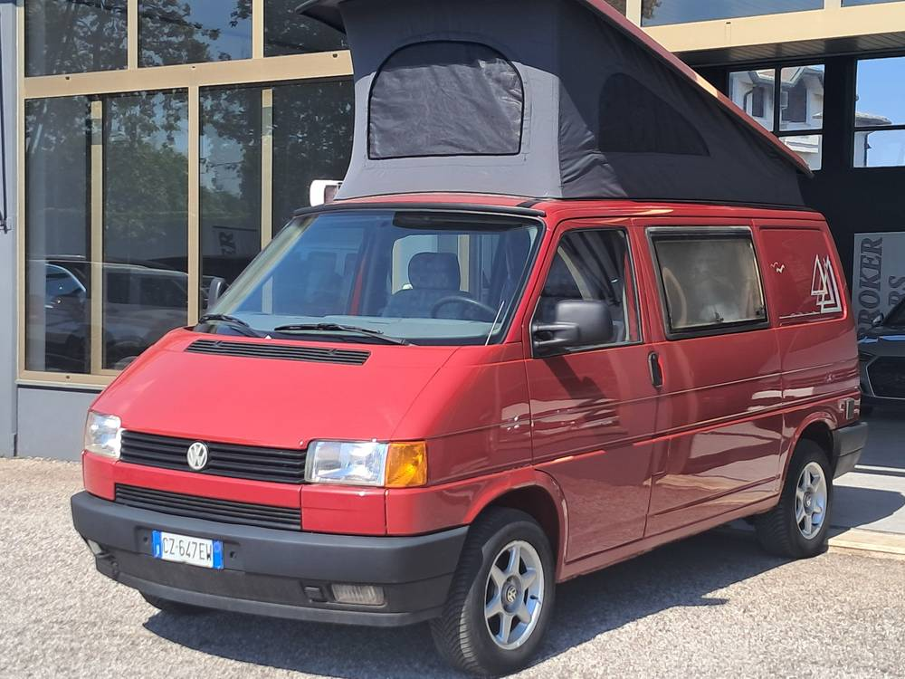
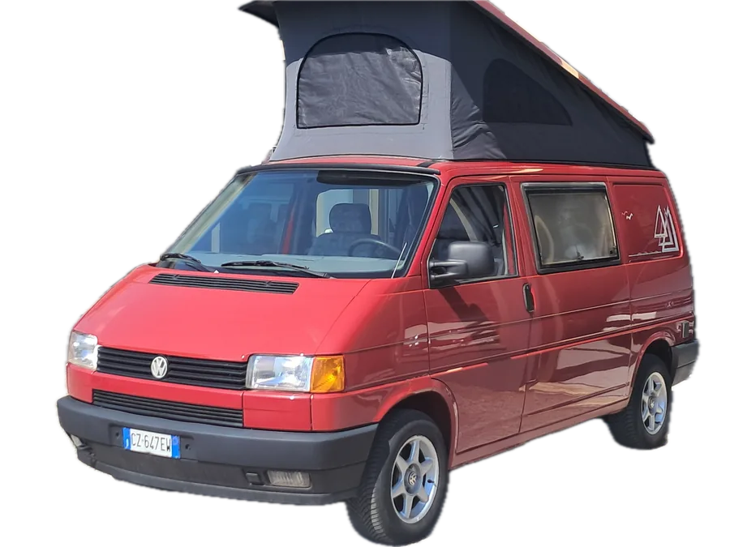

Castagnole di Paese, Treviso. Dal 1968.
Camper Westfalia usati, scelti in Germania e preparati in officina.
California, Multivan e Westfalia T4, T5, T6 importati direttamente e tagliandati da noi prima della vendita. Vieni a provarli.
- 1968l'anno in cui nasce Automil, a Paese
- 1993da allora solo camper Westfalia
- Germaniamezzi importati e selezionati direttamente
- Officinaogni Westfalia tagliandato prima della vendita
- 12 mesigaranzia legale di conformità sugli annunci
- Permutevalutiamo il tuo usato
In piazzale adesso
Prezzi e disponibilità aggiornati al 20 ottobre 2026. Un mezzo ti interessa? Aprilo e scrivici: ti diciamo subito se è ancora qui e quando puoi provarlo.
Cerchi un modello preciso?
Grazie alla rete di partner costruita negli anni troviamo camper Westfalia e non in tutta Europa, anche su tue indicazioni. Su ordinazione anche i mitici T1 Bully e T2.
Alza il tetto.
Un California è una casa su quattro ruote. Ecco cosa controlliamo, pezzo per pezzo, prima di consegnartelo.
-
Tetto a soffietto
Si apre in pochi secondi e diventa una camera da letto. Il telo lo sostituiamo noi e il sottotetto lo puliamo dalla muffa.
-
Letto in alto da 200 cm
Sui California del nostro parco il letto superiore è lungo 200 cm. Sotto, il divano diventa il secondo letto: quattro posti per dormire.
-
Cucina a gas 2 fuochi e lavello
Controlliamo l'impianto dell'acqua dei servizi e, se la vuoi, montiamo la presa esterna per la doccia.
-
Frigorifero a compressore
Bivalente, come su quasi tutti i nostri California. Se non raffredda come deve lo ripariamo e lo revisioniamo in casa.
-
Riscaldatore Webasto
Il caldo autonomo a gasolio per le notti fuori stagione. Ripariamo, revisioniamo e installiamo riscaldatori a gasolio, benzina e GPL.
-
Batteria dei servizi
Tiene accesi luci e frigo a motore spento. Installiamo anche prese per inverter da 12 a 220 V e inverter fissi.
-
Pronto per partire
Ogni Westfalia viene tagliandato completamente nella nostra officina prima della vendita. Tu porti solo le sedie. Anzi, spesso ci sono già.
Scegli il tuo California
L'officina che li conosce a memoria
Automil non si ferma alla compravendita. L'officina è dentro la nostra sede: è lì che prepariamo ogni camper prima della vendita, ed è lì che puoi portare il tuo per manutenzione, riparazioni e modifiche.
Prenota l'officinaDa vettura
ad autocaravan
Facciamo la variazione di omologazione per Westfalia Joker e California Coach, Mercedes Vito e Viano Marco Polo, Volkswagen Multivan T3, T4 e T5. Ci occupiamo anche di variazione del numero di posti, normative antinquinamento e documenti per immatricolare veicoli esteri.
Vita a bordo
- Riparazione e revisione frigoriferi
- Riscaldamenti a gasolio, benzina e GPL: riparazione, revisione, installazione
- Sostituzione del telo del soffietto
- Pulizia del sottotetto dalla muffa
- Impianto acqua dei servizi e presa esterna per la doccia
- Prese per inverter 12-220 V e inverter fissi
- Pulizia delle fodere della selleria
- Tappeti anteriori e centrali su misura
Motore e cambio
- Revisione impianti di alimentazione
- Rettifica motori, testate, volani, collettori di scarico
- Revisione turbina e turbine maggiorate (K16, Garrett)
- Revisione cambio manuale e automatico
- Modifica del cambio per motori TDI
- Intercooler aria-aria e acqua-aria, radiatori supplementari dell'olio
- Manutenzione impianti di raffreddamento
- Elaborazioni con motori 1900 TD o TDI per T3
Syncro e trazione
- Revisione bloccaggio dei differenziali per Syncro, anteriore e posteriore
- Sblocco centrale su Syncro T3 (disgiuntore)
- Frizioni, sospensioni e trasmissioni
- Freni anteriori e posteriori
- Convergenza, revisione cerchi e pneumatici
- Installazione del servosterzo
Carrozzeria e ricambi
- Trattamento scatolati e sottoscocca
- Lavori di carrozzeria leggeri
- Paraurti, cantonali e specchietti
- Ricambi originali Westfalia e non per l'arredamento
- Accessori nuovi e usati: tende veranda, portabiciclette, riscaldatori Webasto o Eberspächer
- Accessori standard e su richiesta
Hai un Westfalia da vendere?
Compriamo camper Westfalia anche da privati, oppure li vendiamo per te in conto vendita. Raccontaci com'è e ti facciamo la nostra migliore offerta.
Le foto mandale direttamente nella chat di WhatsApp che si apre: davanti, dietro, interni, tetto aperto.
Quasi sessant'anni di motori, più di trenta di Westfalia
- 1968
Nasce Automil Automercato, a Castagnole di Paese.
- Renault
Per anni è concessionaria ufficiale Renault.
- 1993
La svolta: l'azienda si dedica ai camperizzati Westfalia e comincia a importare dalla Germania usati selezionati uno per uno.
- Oggi
T3 Joker, T4 California Coach, T5 e T6 California, Mercedes Vito e Viano Marco Polo, gli Exclusive e James Cook con il bagno. E un'officina attrezzata che li taglianda da cima a fondo.
Vieni a provarli
Lo staff ti aspetta in sede per vedere e provare i nostri camperizzati. Ti conviene chiamare prima: così il mezzo che ti interessa lo trovi pronto, col tetto già alzato.
Via Fiume, 131038 Castagnole di Paese (TV) 0422 451221 347 180 2145 (cellulare) info@automil.it
| Lunedì–venerdì | 08:00–12:00 14:30–18:30 |
|---|---|
| Sabato | 09:00–12:30 pomeriggio su appuntamento |
| Domenica | chiuso |